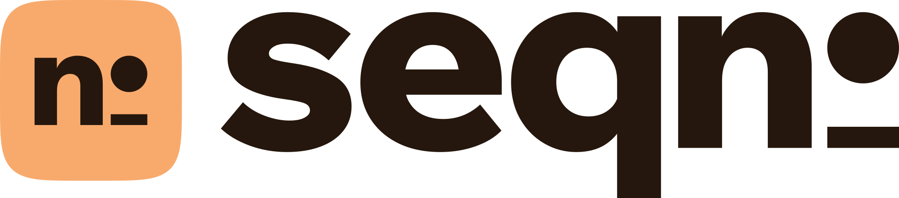
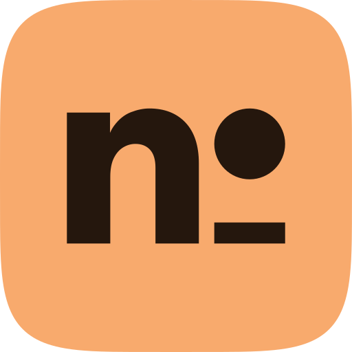
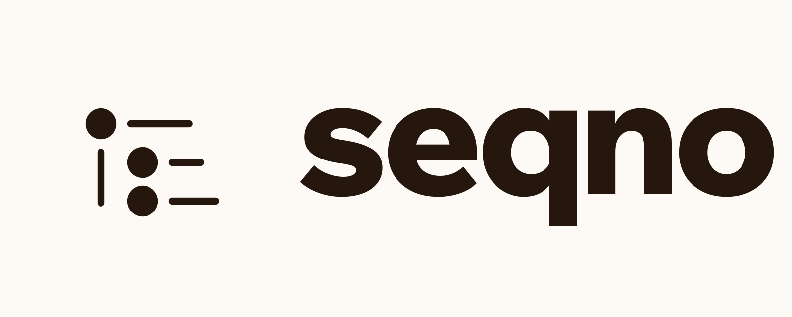
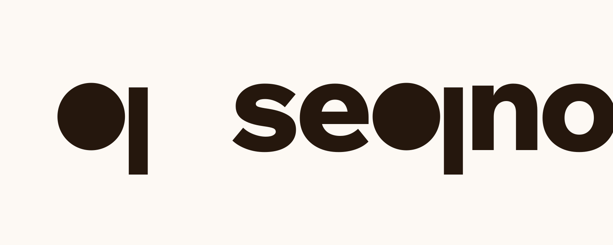
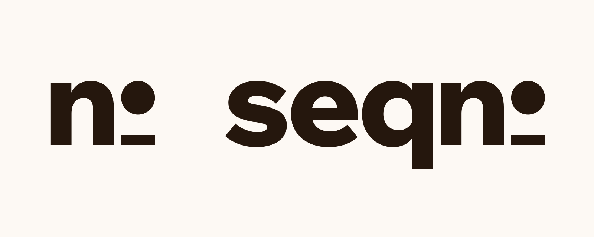

seqno, the brand
- A local-first outliner, built carefully and in the open.
- The brand is made from the outliner's own parts: the bullet, the guide line and the dot-grid page.
- One warm field color, apricot, that no other notes app uses.
- The name means sequence number, so the site shows the real one.
Logo
The last two letters are set as the numero sign: a bullet sitting on a line. seqnº is the sequence number.


lockup-dark.svg
- Always lowercase. In running text the name is plain “seqno”. The º only appears in the drawn logo.
- Clear space is the width of the º disc on every side.
- Smallest sizes: wordmark 20px tall, mark 16px. Below that, write seqno in Wix Madefor Display 700.
- Colors: ink on paper, ink on apricot, apricot or paper on dark. The tile is always apricot with an ink mark, or one solid color with the mark cut out.
- Never outline it, stretch it, recolor the º alone, or put the tile on apricot.
- Grain is for the hero and the link preview only. Everywhere else the logo is clean.

A · Outline passed
The app itself: a parent bullet, its guide line and two children, each with a line of text. It says “outliner” at any size and would animate well. It also looks like the bulleted-list button in every editor toolbar, so it describes the category instead of seqno.

B · Bullet q passed
The q in the middle of the name rebuilt from a round bullet and a straight stem, so the outliner's bullet sits inside the word. Bold and very ownable. At small sizes the disc and bar read as media buttons, record and pause, and the gap splits the word in two.

C · Numero picked
seqno is short for sequence number, so “no” is set as the numero sign: a round bullet on a line. The bullet is the dot the app draws before every block; the line is the row of text after it. The name still reads normally, and “nº” on its own works down to 16px.
Type
Three free families, all under the SIL Open Font License, served from brand/fonts/.
Wix Madefor Display
- use
- logo, headlines, taglines
- weights
- 450 · 600 · 650 · 700 · 800 (logo)
- axis
- variable wght 400–800
Wix Madefor Text
- use
- body, UI, buttons
- weights
- 400 · 550 · 650 + italic
- axis
- variable wght 400–800
Commit Mono
- use
- labels, numbers, code
- weights
- 400 · 500
- figures
- fixed width, slashed zero
64/72 · −0.035em · mobile 44/48
44/48 · −0.03em · mobile 32/40
30/48 (two grid rows) · −0.02em
24/32 · −0.015em
17/28 · −0.005em · measure 36em
15/24 · ink-2
15/20 · buttons, nav
11/16 · +0.14em
14/24
Color
Paper, ink and one field color. Apricot by day, ember by night, and the two trade places: on dark, apricot moves into the ink.
field, light · ink on it 9.1:1
field, dark · apricot on it 7.0:1
Light
Dark
Grid and motifs
Everything sits on the outliner's 24px row. The dot grid is the page's empty rows; a bullet is a row that has something in it.
- Row 24, indent 24. A bullet lands on a grid dot. A child sits one row down and one column in.
- Spacing steps by 8: 4 · 8 · 16 · 24 · 32 · 48 · 72 · 96 · 120.
- Page 1128px max, 24px gutters. Sections are blocks: a bullet and a guide line down the left edge.
- Corners 6 for small UI, 12 for cards and screenshots, round for buttons.
The bullet
A 6–8px disc. Ink on paper, paper on apricot. The only icon the brand really needs.
The guide line
1px, under a parent's bullet, as long as its children. When a bullet swims, the same line hangs behind it.
The dot-grid page
A 24px dot grid at 20% ink on the field, 12% on paper panels. Never behind running text.
- Open a Logseq folder
- Pages and journals import once
- Then the edit log is the truth
- Edits save every 250 ms
Copy as outlines
Lists, taglines and diagrams are set as real outlines, with the same row, indent and guide as the app.
The sequence number
The repo's real commit count in a rolling counter. It only moves when the number really changed since your last visit.
Grain
Soft, static grain on the big wordmark, like ink on rough paper. It never moves on its own and never touches UI or body text.
Motion
Scattered thoughts settle into outlines. Bullets drift as a loose school, flee a moving cursor, and land back on the grid when they're left alone.
Arrival
on load · seed 3Stir
a cursor passes through · each bullet returns on its ownSprings
motion/react · three speeds34 px/s150 px of a moving cursor110 px · 2600 px/s²τ = 1.4 s≤ 220 px/s · gain 4 · steer 6k 140 · c 9row 24 · indent 24blur 14 → 3.5 as bullets land- Motion follows state.
- Things move because something happened: the page loaded, the cursor moved, the commit count changed. No timers, no intervals, no scroll hijacking.
- One physical model.
- Bullets have velocity and they keep it. Every landing curves because it starts from wherever the bullet was going.
- Still means still.
- A cursor that stops is ignored, a hidden tab stops the loop, and reduced motion draws the settled outlines with nothing moving.
Diagrams
Bullets are the nodes, 1px lines are the wires, labels are mono. One path in rust or apricot shows the thing being explained.
Voice
Plain words, real numbers, first person when it's Bassim talking. Work in progress is said out loud, not hidden.